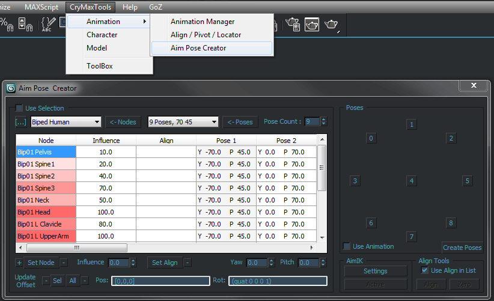
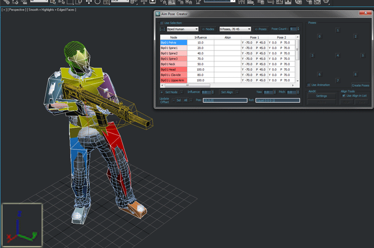
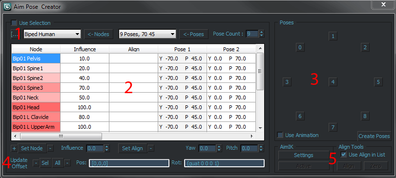

Обзор
Позы прицеливания используются во время выполнения для создания сложных IK-эффектов. Чтобы сопоставить целевые позы с нужными костями, необходимо, чтобы в скелет были включены следующие названия костей.
Если кости не являются частью скелета, позу прицеливания нельзя активировать и использовать во время выполнения.
Постарайтесь сделать позы максимально экстремальными, даже если они могут выглядеть неестественно. Затем лимиты можно установить с помощью игрового кода. Средняя поза (кадр 4) должна быть направлена вперед. Остальные позы сосредоточены вокруг средней позы. Угол между средней позой и остальными прицельными позами должен составлять примерно 70 градусов. Если вы рисуете прицельные позы с помощью ca_DrawAimPoses 3 тогда прицельный конус должен иметь ромбовидную форму.
Настройка
Анимация поз прицеливания
Создание прицельных поз с помощью Aim Pose Creator (CryMaxTools)
Aim Pose Creator используется для создания всех поз Aim на основе шаблонов и автоматически создает кадры с прямыми углами и позами.

Создайте базовую позу, из которой будут получены все целевые позы. Сначала мы создадим позу прицеливания вперед и создадим все остальные позы прицеливания на основе нашей основной позы.
Убедитесь, что кость вашего оружия и само оружие выровнены и оба направлены прямо по оси Y вперед.

Теперь выберите все верхние части тела, начиная с таза Bip01, и откройте Конструктор поз Aim, чтобы создавать позы.

- Шаблон для двуногого человека и template для углов позы и счета.
- Там вы можете определить влияние каждой кости на движение целевой позы для настройки.
- Интерфейс прицельной позы позволяет мгновенно переключаться между каждой позой, нажимая кнопки, там же находится кнопка «Создать позы».
- Иногда после создания всех прицельных поз вы будете получать странные вращения и повороты, причина в том, что вы не обновили смещения. Нажмите кнопку обновления для всех костей или выбранных костей.
- Дает вам возможность настроить IK.
В Aim Pose Creator уже настроен рабочий template по умолчанию, который можно использовать сразу, и если в одном из кадров вам что-то не нравится, вы можете легко настроить кадры вручную.
Обновите все смещения для костей и нажмите кнопку «Создать позы».
Устранение неполадок
Дрожание прицельных поз или прицельные позы не имеют анимации пальцев.
Скорее всего, позы прицеливания не обрабатываются компилятором ресурсов специально и не сжимаются, как любая другая анимация. Проверьте, есть ли в файле cba запись о целевых позах, указывающая на папку, в которую вы экспортируете.
На позы прицеливания влияют другие анимации, например, добавка к дыханию.
Aim IK оценивается внутри слоя, как и другие анимации. Анимации на более высоких уровнях будут влиять на результат Aim IK или перезаписывать его. Чтобы установить уровень, на котором должна оцениваться цель IK, на более высокий уровень, вызовите эту функцию:
CSkeletonPose::SetAimIKLayer(uint32 nLayer)Позы прицеливания работают, но цели, управляемые анимацией IK, не оцениваются.
Если вы хотите использовать управляемую анимацией (перенацеливание конечностей) IK внутри позы прицеливания, чтобы, например, приклеить переднюю руку к оружию (прикрепить кость смешивания и цель к кости оружия), вам необходимо убедиться, что на обеих костьх смешивания AND и целевой кости установлен хотя бы один ключ вращения. Система прицеливания игнорирует кости без контроллеров вращения в качестве оптимизации. Кости бленда в любом случае можно свободно вращать, так как важен только его перевод. См. Анимация на основе IK для получения дополнительной информации.